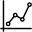
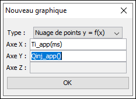
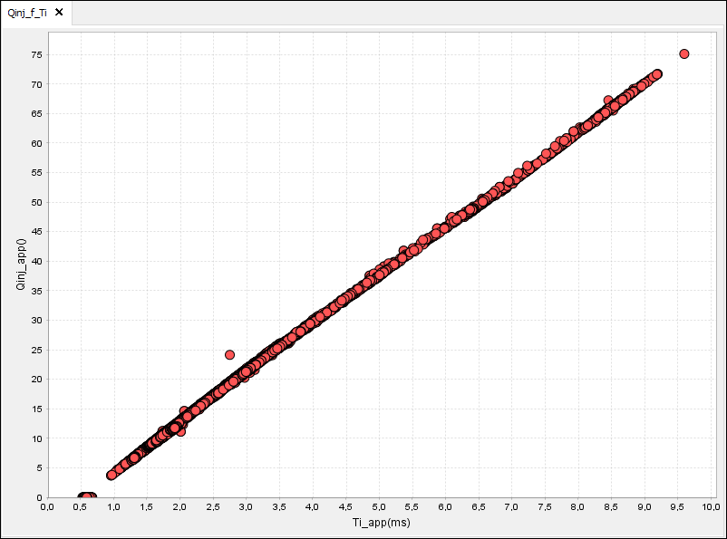
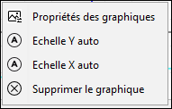

Une fois qu'un log a été ouvert, il est possible de créer différents types de graphiques :
| Ajouter une nouvelle fenetre (ou via le menu Fenetre => Ajouter) | |
|  | Creation d'un nouveau nuage de points, une fenetre sera creee automatiquement |
| Permet de synchroniser l'axe temporel de toutes les fenetres. Si un zoom est réalisé sur une fenetre, toutes les autres en beneficieront aussi |
Temporels :
Double click sur la variable choisie. S'il n'y a pas encore de fenetre, il y en aura une de creer automatiquement.
Si une fenetre est deja selectionnee avec une graphique, un nouveau sera ajouter en dessous.
Pour ajouter une variable à un graphique
deja existant, il suffit de la faire glisser de la liste de variable vers le graphique en question.
Nuage de points :
Lors de la création d'un nuage de point une fenetre s'ouvre et il suffit de choisir le type de graphique
puis de faire glisser les variables dans les zones de texte.
Par exemple si on souhaite tracer le débit de carburant en fonction du
temps d'injection.

On obtiendra un graphique de ce type :

Personnalisation :
En faisant un click droit sur un graphique un menu contextuel avec différentes options s'affiche :

En choissisant "Propriétés des graphiques", il est possible de modifier plusieurs paramètres tels que :